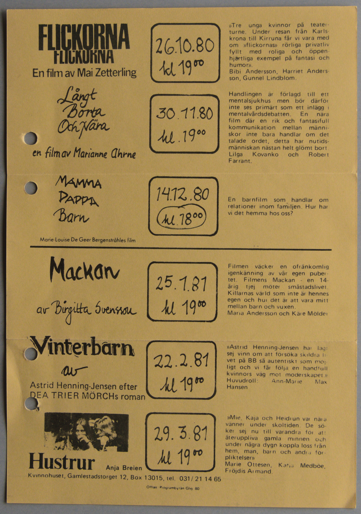
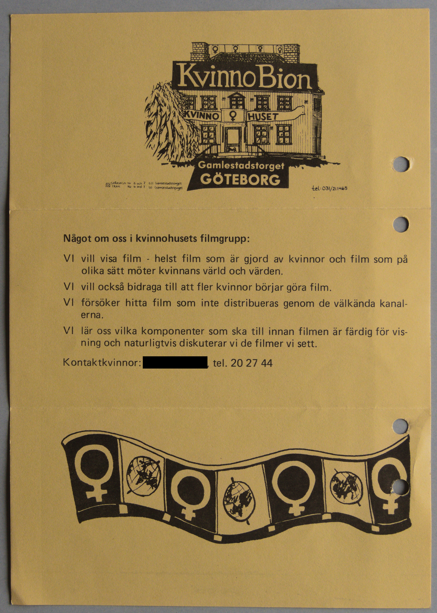

Digitiserad version av miniprogramblad från
KvinnoBion
Faksimil
Framsida av miniprogramblad från KvinnoBion
Transkription
FLICKORNA
FLICKORNA
En film av Mai Zetterling
Långt
Borta
Och Nära
en film av Marianne Ahrne
MAMMA
PAPPA
Barn
Marie-Louise De Geer
Bergenstråhles film
Mackan
av Birgitta Svensson
Vinterbarn
av
Astrid Henning-Jensen efter
DEA TRIER MÖRCHs roman
Hustrur Anja Breien
Kvinnohuset, Gamlestadstorget 12, Box 13015, tel 031/21 14 65
Offset:
Programbyrån Gbg -80
26.10.80
kl 1900
30.11.80
kl. 1900
14.12.80
kl. 1800
25.1.81
kl 1900
22.2.81
kl 1900
29.3.81
kl 1900
»Tre unga kvinnor på teater-
turne. Under resan från Karls-
krona till Kirruna
Kiruna får vi vara med
om »flickornas» rörliga privatliv
fyllt med roliga och öppen-
hjärtliga exempel på fantasi och
humor».
Bibi Andersson, Harriet Anders-
son, Gunnel
Lindblom.
Handlingen är förlagd till ett
mentalsjukhus men bör därför
inte ses primärt som ett inlägg i
mentalvårdsdebatten. En nära
film där en rik och fantasifull
kommunikation mellan männi-
skor inte bara handlar om det
talade ordet, detta har nutids-
människan nästan helt glömt bort.
Lilga Kovanko och Robert
Farrant.
En barnfilm som handlar om
relationer inom familjen. Hur har
vi det hemma hos oss?
Filmen väcker en ofrånkomlig
igenkänning av vår egen puber-
tet. Filmens Mackan - en 14-
årig tjej möter småstadslivet.
Killarnas värld som inte är hennes
egen och hur det är att vara mitt
mellan barn och vuxen.
Maria Andersson och Kåre Mölder
»Astrid Hennig-Jensen har lagt
sej vinn om att försöka skildra li-
vet på BB så autentiskt som möj-
ligt och vi får följa en
handfull
kvinnors väg mot moderskapet.»
Huvudroll: Ann-Marie
Max
Hansen
»Mie, Kaja och Heidrun var nära
vänner under skoltiden. De sö-
ker sej nu till varandra för att
återuppliva gamla minnen och
under några dygn koppla loss från
hem, man, barn och andra för-
pliktelser»
Marie Ottesen, Katja Medböe
Medbøe,
Fröjdis
Frøydis Armand.
Faksimil
Baksida av miniprogramblad från KvinnoBion

Transkription
KvinnoBion
KVINNO ♀ HUSET
Gamlestadstorget
GÖTEBORG
Spårvagn Nr 6 och 7 till Gamlestadstorget
Tram No 6 and 7 to
Gamlestadstorget
tel: 031/211465
Något om oss i kvinnohusets filmgrupp:
VI vill
visa film - helst film som är gjord av kvinnor och film som på
olika sätt möter kvinnans värld och värden.
VI vill också bidraga
till att fler kvinnor börjar göra film.
VI försöker hitta film som
inte distribueras genom de välkända kanal-
erna.
VI lär oss
vilka komponenter som ska till innan filmen är färdig för vis-
ning
och naturligtvis diskuterar vi de filmer vi sett.
Kontaktkvinnor: tel. 20 27 44